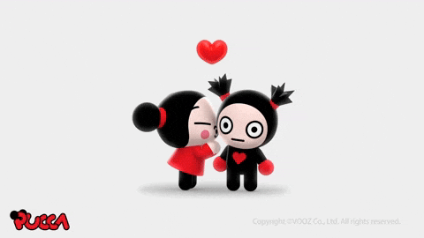
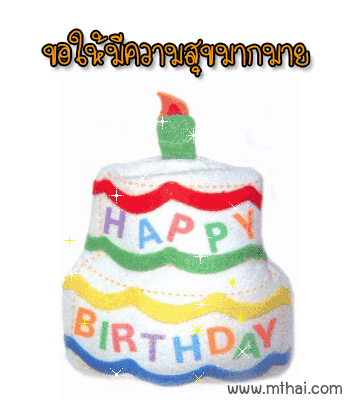
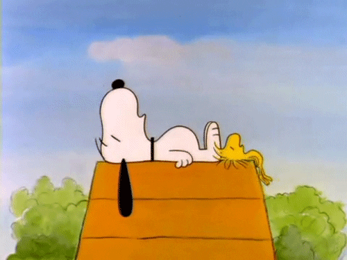
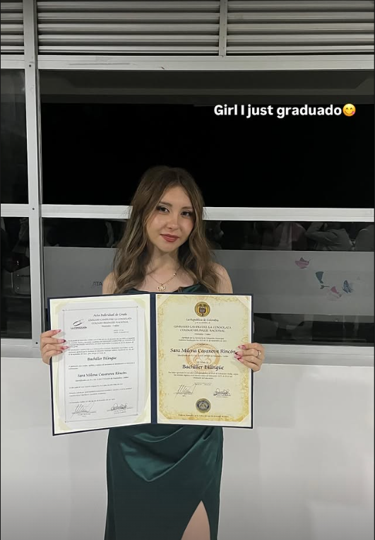
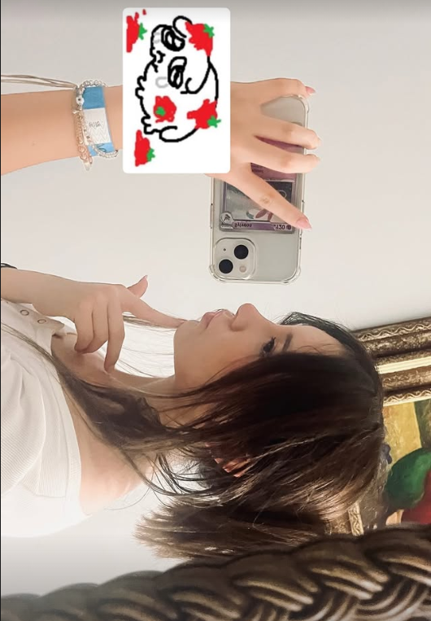
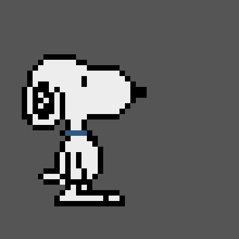
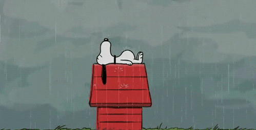

Hola, Sara ¿Como estas?, Esta pagina es especificamente para desearte un feliz cumpleaños. A lo largo de la pagina vas a encontrar cosas que se me vayan ocurriendo, Como por ejempplo cosas que me recuerden a ti, Cosas que se relacionan o siento que se relacionan contigo, Cosas que me gustaria decirte, Mis agradecimientos, Mis deseos para ti, etc. Espero que te guste la pagina que estoy haciendo para tí y lo que voy a poner en ella :)
Sara, Primero que todo te quiero desear un feliz cumpleaños, Quiero desearte que la pases super bien en tu día, Lastima que no puedo estar contigo para celebrarlo juntos.
Quiero que sepas que eres una persona demasiado importante para mí, Eres una persona que siempre me ha ayudado mucho, Siempre me ha apoyado, Siempre sabe como tratarme,
Siempre sabe como hacerme sentir mejor, Siempre sabe que hacer en el momento exacto, Sara, Eres una persona que me ha ayudado a crecer como persona, Desde que te conocí algo cambió en mi,
Hay algo diferente en todo esto, Hay algo diferente en mi, En mi forma de ver las cosas, Creeme cuando te digo que soy literalmente lo que soy gracias a ti, Gracias a todo lo que pasó contigo,
Que aunque no fuera algo bueno, Fue algo que me hizo crecer, Me hizo aprender, Me hizo ser mejor persona, Me hizo ser mas fuerte, Me hizo ser mas maduro, Me hizo ser mas inteligente,
Mas dedicado, Mas responsable, Mas todo, Gracias a ti.
En este punto de mi vida y el poco tiempo que llevo conociendote, Tengo tantas cosas que agradecerte, Me doy cuenta de lo importante que eres para mi, De lo indispensable que eres, De lo necesaria que eres,
No es algo así como muy raro, Solo que eres mi ayuda, Mi apoyo, Mi guía, Eres una mujer madura, Una mujer que sabe lo que quiere, Una mujer que ama lo que hace, Una mujer que se esfuerza por lo que quiere, Una mujer que es inteligente,
De verdad te admiro mucho, Te admiro por lo que eres, Por lo dedicada que eres, Por lo que haces, Por lo dedicada que eres, Por lo inteligente que eres, Por tu madurez, Por tu forma de pensar, Tu forma de ser, Por lo que quieres,
A lo largo de estos 3 años (creo que son 3 ¿No?) han pasado tantas cosas, Cosas que me han hecho tener claridad sobre lo que quiero en la vida, Sobre lo que busco en una persona, Tanto en amistad como en una relación, Sobre lo que quiero para mi vida,
Sobre lo que quiero para mi presente, Sobre lo que no debo repetir de mi pasado.
Debo y quiero agradecerte tantas cosas, Que realmente no me alcanzan las palabras para todo.


psdt:No preguntes el por que de las canciones, Quedate con el "Me recuerdan a ti :)"
Sara en este punto de la pagina estoy bloqueado, No se me ocurre nada más, Menos mal tengo algo de tiempo.
Mientras tanto quiero decirte que esta pagina la estoy haciendo con todo el cariño del mundo, Le estoy poniendo todo mi empeño y todo lo que se programar
para que te guste, Para que te emocione, No se si alguna vez te habían hecho una pagina, Espero esta sea la primera de muchas, Espero que te guste esta.
Algunas veces veo el atardecer Yo me acuerdo de ti,
Y es raro, Por que aun que no hablemos siempre pasa, Siempre que veo algo bonito pienso en ti, Y no es una insinuación ni nada, No es algo como de "Conquista", Es
de verdad algo que me pasa muy seguido y no se por que, Algo que también me pasa es que a veces pienso y pienso en ti, TODO EL TIEMPO, Este donde este, Con quien este,
En cualquier situación o momento del día, Vuelvo y reitero que no es algo de conquista ni nada, Es algo que me pasa, Es algo que siento, Algo que no puedo controlar.
Realmente es bonito que me pase eso, O almenos eso pienso yo, Por que no pienso todo el tiempo en lo que tengo que hacer, O en mis problemas, Si no que
estas tu literalmente en mi mente y eso es algo que me hace sentir bien, Me hace sentir feliz, Tranquilo.
Como una flor… hay cosas que crecen sin que uno se dé cuenta.
Sara, Quiero agradecerte por todo lo que me has hecho ser en estos ultimos años, Vuelvo a decirte que gracias a ti soy quien soy hoy. Por que gracias a mis errores del pasado contigo Ahora se como actuar en algúnas situaciones, Soy mas maduro, Me tomo las cosas con mas calma de las que me las hubiera tomado antes, Gracias por todo lo que has hecho po rmi ultimamente, Has sembrado recuerdos en mi, En mi mente en mis sentimientos que nunca se van a volver a repetir al menos con otra persona, Por que de verdad eres la primera persona que me compró una tortica de pumpe(Una persona que no hubieran sido mis papás o yo), Eres la primera persona que se preocupó por mi cumpleaños, Eres la primera persona que me regaló algo sun esperar nada a cambio, La primera persona que hace algo por mi desinteresadamente si esperar el que pordría hacer yo por ti, Eres la primera persona que me hizo sentir apenado por recibir algo, Ya que no me habían dado algo nunca. Te juro que siempre que pienso en esos días me sale una sonrisa en la cara, Por que de verdad me sentí demasiado bien, Demasiado querido, Demasiado yo Sacaste mi niño interior, Sacaste la felicidad que no podía salir por algún motivo, Y ahora todo en mi vida gracias a ti es felicidad, Por que te lo repito de nuevo, Eres como mi suerte, Por que siempre que estas presente en mi vida todo son como puras cosas buenas, Solo buenas noticias y felicidad.

Aclarar que esto se me ocurrió a las 12:50 de la mañana, Entonces si está un poco raro ya sabes por que es😭

Esta foto es más que todo por el momento, Por lo que representa, Ahí no te hablaba todavía, Pero, Puedo sentir la emoción en la foto, Puedo sentir orgullo por lo que lograste, Aunque no tenga nada que ver, Felicitaciones, Sara.
Okei, Aquí viene mi foto favorita:

Iba a poner mas imagenes, Pero, Todas las tengo en google fotos y no deja descargarlas desde el computador :(
Top cosas que me acuerdo de ti:


Sara, you are the most amazing person i have ever meet. I really want to thank you for everything you have done for me (Ya no se me ocurre nada más😭)
Realmente quiero volver a agradecerte por todo lo que has hecho por mi, Por que me sienta bien, Por apoyarme siempre;
Gracias por ser como eres conmigo, Por ser tan dedicada, Por ser tan inteligente, Buena persona, Por ser tan especial para mi,
Gracias por ser mi amiga, Mi apoyo, Mi suerte, Gracias por ser tan tú, Gracias por ser tan especial.
Gracias por siempre apoyarme en todo, Lo vuelvo a repetir: Nunca voy a olvidar la vez que me diste esa torta AHSDHASD, Estaba tan emocionado
y tan apenado que no sabía que hacer, No sabía como reaccionar, Nunca había recibido algo así, Nunca me había sentido tan especial.
Creeme que existen miles y miles de personas en el mundo, Pero, No existe nadie como tu, No hay nadie que me haga sentir como tu,
Es raro, Por que podemos pasar meses sin hablar, Pero, Siempre que hablamos me dan ganas de hablar mas y mas, Como que me vuelvo a enganchar
Y no confundo las cosas, Simplemente es algo que me pasa, Es algo que no va mas allá de mis sentimientos, Algo que no tiene nada que ver con "Conquista"(Si es que lo piensas así),
Feliz cumpleaños, Sara, Espero que en este día tan especial para tí puedas pasar excelente con tus papás, Feliz viajeeeee y espero que podamos vernos prontoo <3 ...
Y aunque no se que pase despues...
Gracias por haber sido parte de mi historia
pd:Sigues siendo alergica al tomate y al sol😭😭😭
Si llegaste hasta aquí...
Gracias por tomarte el tiempo de leer todo esto
No sé qué pase en el futuro,
pero sí sé que conocerte fue algo muy especial para mí
Feliz cumpleaños, Sara ❤️
01-04-26